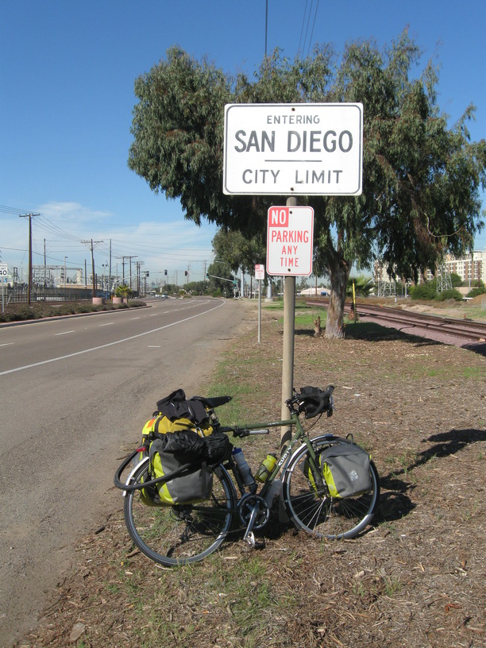
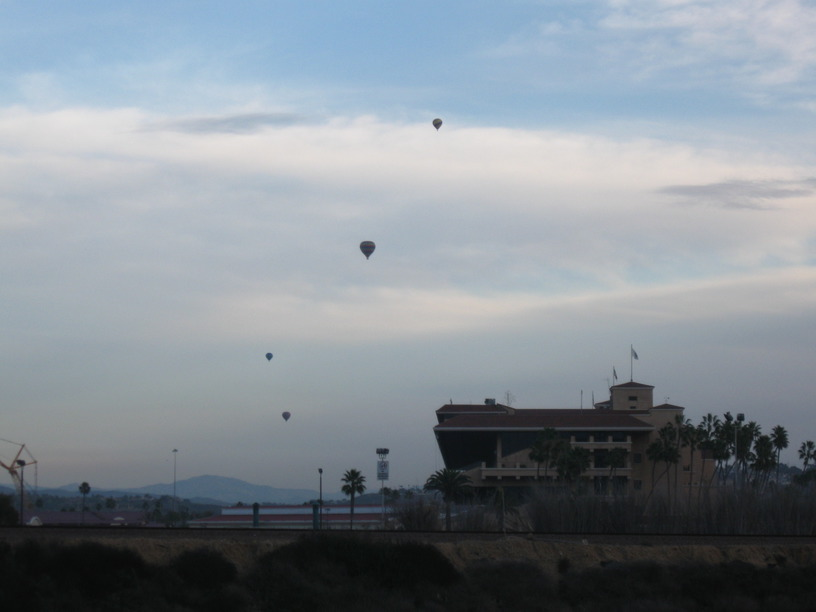
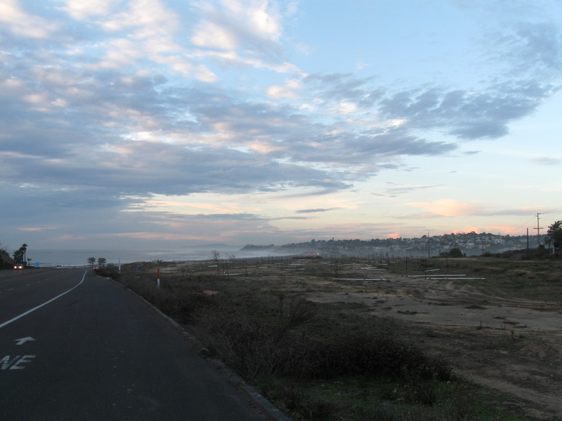

6 Dec 2008, Encinitas, CA
"Ocean in view! Overjoyed!" (or whatever the quote is from Lewis & Clark).
I headed out at 10 this morning & rode into SD, then started up the coast! I haven't actually touched the water yet. I had a little trouble navigating the north end of the S.D. Bay. I was trying to stay close to the water & keep it on my left, but that put me going south onto a submarine base, so I had to backtrack a bit & go inland. It is very beautiful here, of course, and I appreciate having bike lanes just about everywhere.
I rode ~50 miles today & I have about the same tomorrow, then I'm done . . . It doesn't seem remarkable, what I've done, even through so many people seem to think so. I just committed myself to going out & doing a little bit more each day. It wasn't grueling or painful or arduous & it wasn't especially dangerous either. It just became route. Of course some parts were never routine—finding a new place to sleep every night, interacting with & meeting brand new people every day.
I've not had any strong feelings about finishing this trip & I think it's because I'm just exchanging one routine for another.
Anyway, enough reflection, it's bedtime.
The correct quote is, 'Ocian in view! O! The Joy!' —William Clark. On his spelling.


